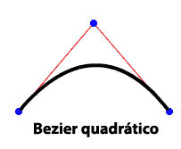

| Pacote | flash.display |
| Classe | public final class Graphics |
| Herança | Graphics |
| Versão da linguagem: | ActionScript 3.0 |
| Versões de runtime: | AIR 1.0, Flash Player 9, Flash Lite 4 |
graphics que é um objeto Graphics. As funções a seguir referem-se a funções auxiliares fornecidas para facilitar o uso: drawRect(), drawRoundRect(), drawCircle() e drawEllipse().
Não é possível criar um objeto Graphics diretamente do código ActionScript. Se você chamar new Graphics(), uma exceção será lançada.
A classe Graphics é final e não pode ser transformada em subclasse.
 Ocultar propriedades públicas herdadas
Ocultar propriedades públicas herdadas Mostrar propriedades públicas herdadas
Mostrar propriedades públicas herdadas| Método | Definido por | ||
|---|---|---|---|
beginBitmapFill(bitmap:BitmapData, matrix:Matrix = null, repeat:Boolean = true, smooth:Boolean = false):void
Preenche uma área de desenho com uma imagem bitmap. | Graphics | ||
Especifica um preenchimento simples de uma cor para chamadas subsequentes a outros métodos Graphics (como lineTo() ou drawCircle()) usados para desenhar. | Graphics | ||
beginGradientFill(type:String, colors:Array, alphas:Array, ratios:Array, matrix:Matrix = null, spreadMethod:String = "pad", interpolationMethod:String = "rgb", focalPointRatio:Number = 0):void
Especifica um preenchimento de gradiente usado nas chamadas subsequentes de outros métodos Graphics (por exemplo, lineTo() ou drawCircle()) do objeto. | Graphics | ||
Especifica um preenchimento de sombreador usado nas chamadas subsequentes de outros métodos Graphics (por exemplo, lineTo() ou drawCircle()) do objeto. | Graphics | ||
Limpa os gráficos que foram desenhados para este objeto Graphics e redefine as configurações de preenchimento e estilo de linha. | Graphics | ||
Copia todos os comandos de desenho do objeto Graphics de origem para o objeto Graphics de chamada. | Graphics | ||
cubicCurveTo(controlX1:Number, controlY1:Number, controlX2:Number, controlY2:Number, anchorX:Number, anchorY:Number):void
Desenha uma curva de Bezier cúbica a partir da posição de desenho atual ao ponto de ancoragem especificado. | Graphics | ||
Desenha uma curva Bezier quadrática utilizando o estilo de linha atual a partir da posição de desenho atual até (anchorX, anchorY) e utilizando o ponto de controle especificado por (controlX, controlY). | Graphics | ||
Desenha um círculo. | Graphics | ||
Desenha uma elipse. | Graphics | ||
Envia uma série de ocorrências de IGraphicsData para desenho. | Graphics | ||
Envia uma série de comandos para desenho. | Graphics | ||
Desenha um retângulo. | Graphics | ||
drawRoundRect(x:Number, y:Number, width:Number, height:Number, ellipseWidth:Number, ellipseHeight:Number = NaN):void
Desenha um retângulo arredondado. | Graphics | ||
drawTriangles(vertices:Vector.<Number>, indices:Vector.<int> = null, uvtData:Vector.<Number> = null, culling:String = "none"):void
Renderiza um conjunto de triângulos, geralmente para distorcer bitmaps e dar uma aparência tridimensional. | Graphics | ||
Aplica um preenchimento às linhas e curvas que foram adicionadas desde a última chamada ao método beginFill(), beginGradientFill() ou beginBitmapFill(). | Graphics | ||
 |
Indica se um objeto tem uma propriedade especificada definida. | Object | |
|
Indica se uma ocorrência da classe Object está na cadeia de protótipos do objeto especificado como o parâmetro. | Object | |
lineBitmapStyle(bitmap:BitmapData, matrix:Matrix = null, repeat:Boolean = true, smooth:Boolean = false):void
Especifica um bitmap a ser usado no traçado da linha durante o desenho de linhas. | Graphics | ||
lineGradientStyle(type:String, colors:Array, alphas:Array, ratios:Array, matrix:Matrix = null, spreadMethod:String = "pad", interpolationMethod:String = "rgb", focalPointRatio:Number = 0):void
Especifica um gradiente a ser usado no traçado durante o desenho de linhas. | Graphics | ||
Especifica um shader a ser usado no traçado da linha durante o desenho de linhas. | Graphics | ||
lineStyle(thickness:Number = NaN, color:uint = 0, alpha:Number = 1.0, pixelHinting:Boolean = false, scaleMode:String = "normal", caps:String = null, joints:String = null, miterLimit:Number = 3):void
Especifica um estilo de linha a ser usado nas chamadas subsequentes de métodos Graphics, por exemplo, lineTo() ou drawCircle(). | Graphics | ||
Desenha uma linha usando o estilo de linha atual a partir da posição de desenho atual até (x, y); a posição de desenho atual é então definida como (x, y). | Graphics | ||
Move a posição do desenho atual até (x, y). | Graphics | ||
|
Indica se a propriedade especificada existe e é enumerável. | Object | |
Consulte um objeto Sprite ou Shape (e, opcionalmente, seus filhos) para o conteúdo do vetor do gráfico. | Graphics | ||
|
Define a disponibilidade de uma propriedade dinâmica para operações de repetição. | Object | |
|
Retorna a representação da string deste objeto, formatado segundo as convenções específicas para a localidade. | Object | |
|
Retorna a representação de string do objeto especificado. | Object | |
|
Retorna o valor primitivo do objeto especificado. | Object | |
beginBitmapFill | () | método |
public function beginBitmapFill(bitmap:BitmapData, matrix:Matrix = null, repeat:Boolean = true, smooth:Boolean = false):void| Versão da linguagem: | ActionScript 3.0 |
| Versões de runtime: | AIR 1.0, Flash Player 9, Flash Lite 4 |
Preenche uma área de desenho com uma imagem bitmap. O bitmap pode ser repetido ou colocado lado a lado para preencher a área. O preenchimento permanece em vigor até você chamar os métodos beginFill(), beginBitmapFill(), beginGradientFill() ou beginShaderFill(). Chamar o método clear() irá limpar o preenchimento.
O aplicativo renderiza o preenchimento sempre que três ou mais pontos são desenhados, ou quando o método endFill() é chamado.
Parâmetros
bitmap:BitmapData — Uma imagem bitmap transparente ou opaca que contém os bits a serem exibidos.
| |
matrix:Matrix (default = null)
matrix = new flash.geom.Matrix();
matrix.rotate(Math.PI / 4);
| |
repeat:Boolean (default = true)true, a imagem bitmap se repetirá em um padrão lado a lado. Se false, a imagem bitmap não se repetirá e as bordas do bitmap serão usadas para qualquer área de preenchimento que se estender além do bitmap.
Por exemplo, considere o seguinte bitmap (um padrão quadriculado de 20 x 20 pixels):
Quando
Quando
| |
smooth:Boolean (default = false)false, as imagens bitmap detalhadas serão renderizadas com o uso de um algoritmo de vizinho mais próximo e terão uma aparência pixelizada. Se true, as imagens bitmap detalhadas serão renderizadas com o uso de um algoritmo bilinear. A renderização com o uso do algoritmo de vizinho mais próximo é mais rápida.
|


Elementos da API relacionados
Exemplo ( Como usar este exemplo )
image1.jpg) que é girada e repetida para preencher um retângulo.
- O arquivo de imagem (
image1.jpg) é carregado com o uso dos objetosLoadereURLRequest. Aqui, o arquivo está no mesmo diretório que o arquivo SWF. O arquivo SWF precisa ser compilado com Segurança de reprodução local definida como Acessar somente arquivos locais. - Quando a imagem é carregada (
Eventestá completo), o métododrawImage()é chamado. O métodoioErrorHandler()gravará um comentário de rastreamento se a imagem não tiver sido carregada corretamente. - No método
drawImage(), um objetoBitmapDataé instanciado e sua largura e altura são definidas como a imagem (image1.jpg). A imagem de origem é então desenhada no objeto BitmapData. Em seguida, um retângulo é desenhado no objeto SpritemySpritee o objeto BitmapData é usado para preenchê-lo. Usando um objetoMatrix, o métodobeginBitmapFill()gira a imagem 45 graus e, em seguida, inicia o preenchimento do retângulo com a imagem até terminar.
package {
import flash.display.Sprite;
import flash.display.BitmapData;
import flash.display.Loader;
import flash.net.URLRequest;
import flash.events.Event;
import flash.events.IOErrorEvent;
import flash.geom.Matrix;
public class Graphics_beginBitmapFillExample extends Sprite {
private var url:String = "image1.jpg";
private var loader:Loader = new Loader();
public function Graphics_beginBitmapFillExample() {
var request:URLRequest = new URLRequest(url);
loader.load(request);
loader.contentLoaderInfo.addEventListener(Event.COMPLETE, drawImage);
loader.contentLoaderInfo.addEventListener(IOErrorEvent.IO_ERROR, ioErrorHandler);
}
private function drawImage(event:Event):void {
var mySprite:Sprite = new Sprite();
var myBitmap:BitmapData = new BitmapData(loader.width, loader.height, false);
myBitmap.draw(loader, new Matrix());
var matrix:Matrix = new Matrix();
matrix.rotate(Math.PI/4);
mySprite.graphics.beginBitmapFill(myBitmap, matrix, true);
mySprite.graphics.drawRect(100, 50, 200, 90);
mySprite.graphics.endFill();
addChild(mySprite);
}
private function ioErrorHandler(event:IOErrorEvent):void {
trace("Unable to load image: " + url);
}
}
}
beginFill | () | método |
public function beginFill(color:uint, alpha:Number = 1.0):void| Versão da linguagem: | ActionScript 3.0 |
| Versões de runtime: | AIR 1.0, Flash Player 9, Flash Lite 4 |
Especifica um preenchimento simples de uma cor para chamadas subsequentes a outros métodos Graphics (como lineTo() ou drawCircle()) usados para desenhar. O preenchimento permanece em vigor até você chamar os métodos beginFill(), beginBitmapFill(), beginGradientFill() ou beginShaderFill(). Chamar o método clear() irá limpar o preenchimento.
O aplicativo renderiza o preenchimento sempre que três ou mais pontos são desenhados, ou quando o método endFill() é chamado.
Parâmetros
color:uint — A cor do preenchimento (0xRRGGBB).
| |
alpha:Number (default = 1.0) |
Elementos da API relacionados
Exemplo
Como usar este exemplo
Consulte o exemplo no final desta classe para ver uma ilustração de como usar esse método.
beginGradientFill | () | método |
public function beginGradientFill(type:String, colors:Array, alphas:Array, ratios:Array, matrix:Matrix = null, spreadMethod:String = "pad", interpolationMethod:String = "rgb", focalPointRatio:Number = 0):void| Versão da linguagem: | ActionScript 3.0 |
| Versões de runtime: | AIR 1.0, Flash Player 9, Flash Lite 4 |
Especifica um preenchimento de gradiente usado nas chamadas subsequentes de outros métodos Graphics (por exemplo, lineTo() ou drawCircle()) do objeto. O preenchimento permanece em vigor até você chamar os métodos beginFill(), beginBitmapFill(), beginGradientFill() ou beginShaderFill(). Chamar o método clear() irá limpar o preenchimento.
O aplicativo renderiza o preenchimento sempre que três ou mais pontos são desenhados, ou quando o método endFill() é chamado.
Parâmetros
type:String — Um valor a partir da classe SpreadMethod que especifica o modo de dispersão a ser usado. GradientType.LINEAR ou GradientType.RADIAL.
| |||||||||
colors:Array — Uma matriz de valores de cor hexadecimais RGB usada no gradiente, por exemplo, vermelho é 0xFF0000, azul é 0x0000FF, e assim por diante. É possível especificar até 15 cores. Para cada uma, especifique um valor correspondente nos parâmetros de alfas e proporções.
| |||||||||
alphas:Array — Uma matriz de valores alfa para as cores correspondentes na matriz de cores. Os valores válidos são de 0 a 1. Se o valor for menor do que 0, o padrão será 0. Se o valor for maior do que 1, o padrão será 1.
| |||||||||
ratios:Array — Uma matriz de proporções de distribuição de cores. Os valores válidos são de 0 a 255. Esse valor define a porcentagem da largura na qual a cor é classificada em 100%. O valor 0 representa a posição à esquerda na caixa de gradiente, enquanto 255 representa a posição à direita nessa caixa.
Observação: Esse valor representa posições na caixa de gradiente e não o espaço de coordenadas do gradiente final, que pode ser mais amplo ou estreito do que a caixa de gradiente. Especifique um valor para valor no parâmetro Por exemplo, para um gradiente linear que inclui duas cores, azul e verde, o exemplo a seguir ilustra a disposição das cores nesse gradiente com base em diferentes valores na matriz de
Os valores na matriz devem aumentar sequencialmente; por exemplo, | |||||||||
matrix:Matrix (default = null)createGradientBox(), que permite configurar convenientemente a matriz para uso com o método beginGradientFill().
| |||||||||
spreadMethod:String (default = "pad")SpreadMethod.PAD, SpreadMethod.REFLECT ouSpreadMethod.REPEAT.
Por exemplo, considere um gradiente linear simples entre duas cores:
import flash.geom.*
import flash.display.*
var fillType:String = GradientType.LINEAR;
var colors:Array = [0xFF0000, 0x0000FF];
var alphas:Array = [1, 1];
var ratios:Array = [0x00, 0xFF];
var matr:Matrix = new Matrix();
matr.createGradientBox(20, 20, 0, 0, 0);
var spreadMethod:String = SpreadMethod.PAD;
this.graphics.beginGradientFill(fillType, colors, alphas, ratios, matr, spreadMethod);
this.graphics.drawRect(0,0,100,100);
Esse exemplo usa
Se você usar
Se você usar
| |||||||||
interpolationMethod:String (default = "rgb")InterpolationMethod.LINEAR_RGB ou InterpolationMethod.RGB
Por exemplo, considere um gradiente linear simples entre duas cores (com o parâmetro
| |||||||||
focalPointRatio:Number (default = 0)focalPointRatio definido como 0,75:
|


Lança
ArgumentError — Se o parâmetro tipo não for válido.
|
Elementos da API relacionados
beginShaderFill | () | método |
public function beginShaderFill(shader:Shader, matrix:Matrix = null):void| Versão da linguagem: | ActionScript 3.0 |
| Versões de runtime: | Flash Player 10, AIR 1.5 |
Especifica um preenchimento de shader usado nas chamadas subsequentes de outros métodos Graphics (por exemplo, lineTo() ou drawCircle()) do objeto. O preenchimento permanece em vigor até você chamar os métodos beginFill(), beginBitmapFill(), beginGradientFill() ou beginShaderFill(). Chamar o método clear() irá limpar o preenchimento.
O aplicativo renderiza o preenchimento sempre que três ou mais pontos são desenhados, ou quando o método endFill() é chamado.
Os preenchimentos com sombreamento não são compatíveis com a renderização pela GPU. Áreas preenchidas serão pintadas de ciano.
Parâmetros
shader:Shader — O shader a ser usado no preenchimento. Essa ocorrência de Shader não é necessária à especificação de uma entrada de imagem. No entanto, caso seja especificada no shader, a entrada de imagem deve ser fornecida manualmente. Para especificar a entrada, defina a propriedade input da propriedade ShaderInput correspondente da propriedade Shader.data.
Quando você passa uma ocorrência de Shader como um argumento, o shader é copiado internamente. A operação de preenchimento de desenho usa essa cópia interna, e não uma referência ao shader original. Todas as alterações feitas no shader como, por exemplo, alterar o valor de um parâmetro, entrada ou código de bytes, não são aplicadas ao shader copiado usado no preenchimento. | |
matrix:Matrix (default = null)
matrix = new flash.geom.Matrix();
matrix.rotate(Math.PI / 4);
As coordenadas recebidas no shader se baseiam na matriz especificada para o parâmetro |
Lança
ArgumentError — Quando o tipo de saída do shader não é compatível com essa operação (o shader deve especificar uma saída pixel3 ou pixel4).
| |
ArgumentError — Quando o shader especifica uma entrada de imagem não fornecida.
| |
ArgumentError — Quando for ByteArray ou Vector.A ocorrência de <Number> é usada como uma entrada e as propriedades width e height não são especificadas para ShaderInput ou os valores especificados não correspondem à quantidade de dados no objeto de entrada. Consulte a propriedade ShaderInput.input para obter mais informações.
|
Elementos da API relacionados
clear | () | método |
public function clear():void| Versão da linguagem: | ActionScript 3.0 |
| Versões de runtime: | AIR 1.0, Flash Player 9, Flash Lite 4 |
Limpa os gráficos que foram desenhados para este objeto Graphics e redefine as configurações de preenchimento e estilo de linha.
copyFrom | () | método |
public function copyFrom(sourceGraphics:Graphics):void| Versão da linguagem: | ActionScript 3.0 |
| Versões de runtime: | Flash Player 10, AIR 1.5, Flash Lite 4 |
Copia todos os comandos de desenho do objeto Graphics de origem para o objeto Graphics de chamada.
Parâmetros
sourceGraphics:Graphics — O objeto Graphics do qual copiar os comandos de desenho.
|
cubicCurveTo | () | método |
public function cubicCurveTo(controlX1:Number, controlY1:Number, controlX2:Number, controlY2:Number, anchorX:Number, anchorY:Number):void| Versão da linguagem: | ActionScript 3.0 |
| Versões de runtime: | Flash Player 11, AIR 3 |
Desenha uma curva de Bezier cúbica a partir da posição de desenho atual ao ponto de ancoragem especificado. Curvas de Bezier cúbicas consistem em dois pontos de ancoragem e dois pontos de controle. A curva interpola os dois pontos de ancoragem e resulta em um encurvamento em direção aos pontos de controle.

Os quatro pontos utilizados para desenhar uma curva de Bezier cúbica com o métodocubicCurveTo () são os seguintes:
- A posição de desenho atual é o primeiro ponto de ancoragem.
- O
anchorXe os parâmetrosanchorYespecificam o segundo ponto de ancoragem. - O
controlX1e os parâmetroscontrolY1especificam o primeiro ponto de controle. - O
controlX2e os parâmetroscontrolY2especificam o segundo ponto de controle.
Se você chamar o método cubicCurveTo () antes da chamada do método moveTo (), sua curva será iniciada na posição (0, 0).
Se o método cubicCurveTo () for bem-sucedido, o tempo de execução do Flash definirá a posição de desenho atual em (anchorX, anchorY). Se o método cubicCurveTo () falhar, a posição de desenho atual permanecerá inalterada.
Se seu clipe de filme contiver o conteúdo criado com as ferramentas de desenho do Flash, os resultados de chamadas para o método cubicCurveTo () serão desenhados embaixo daquele conteúdo.
Parâmetros
controlX1:Number — Especifica a posição horizontal do primeiro ponto de controle relativa ao ponto de registro do objeto de exibição pai.
| |
controlY1:Number — Especifica a posição vertical do primeiro ponto de controle relativa ao ponto de registro do objeto de exibição pai.
| |
controlX2:Number — Especifica a posição horizontal do segundo ponto de controle relativa ao ponto de registro do objeto de exibição pai.
| |
controlY2:Number — Especifica a posição vertical do segundo ponto de controle relativa ao ponto de exibição do objeto de exibição pai.
| |
anchorX:Number — Especifica a posição horizontal do ponto de ancoragem relativa ao ponto de registro do objeto de exibição pai.
| |
anchorY:Number — Especifica a posição vertical do ponto de ancoragem relativa ao ponto de registro do objeto de exibição pai.
|
Exemplo ( Como usar este exemplo )
Desenhe quatro curvas para produzir um círculo e preencha-o com azul.
Observe que, devido à natureza da equação de Bezier cúbica, esse círculo não é perfeito. A melhor maneira de desenhar um círculo é usar o método drawCircle() da classe Graphics.
package {
import flash.display.Sprite;
import flash.display.Shape;
public class Graphics_cubicCurveToExample extends Sprite
{
public function Graphics_cubicCurveToExample():void
{
var rounderObject:Shape = new Shape();
rounderObject.graphics.beginFill(0x0000FF);
rounderObject.graphics.moveTo(250, 0);
rounderObject.graphics.cubicCurveTo(275, 0, 300, 25, 300, 50);
rounderObject.graphics.cubicCurveTo(300, 75, 275, 100, 250, 100);
rounderObject.graphics.cubicCurveTo(225, 100, 200, 75, 200, 50);
rounderObject.graphics.cubicCurveTo(200, 25, 225, 0, 250, 0);
rounderObject.graphics.endFill();
this.addChild(rounderObject);
}
}
}
curveTo | () | método |
public function curveTo(controlX:Number, controlY:Number, anchorX:Number, anchorY:Number):void| Versão da linguagem: | ActionScript 3.0 |
| Versões de runtime: | AIR 1.0, Flash Player 9, Flash Lite 4 |
Desenha uma curva Bezier quadrática utilizando o estilo de linha atual a partir da posição de desenho atual até (anchorX, anchorY) e utilizando o ponto de controle especificado por (controlX, controlY). A posição de desenho atual é então definida como (anchorX, anchorY). Se o clipe de filme no qual você está desenhando tiver um conteúdo criado com as ferramentas de desenho do Flash, as chamadas para o método curveTo() serão desenhadas abaixo desse conteúdo. Se você chamar curveTo() antes de qualquer chamada ao método moveTo(), o padrão da posição de desenho atual será (0, 0). Se qualquer um dos parâmetros estiver ausente, esse método falhará e a posição do desenho atual não será alterada.
A curva desenhada é uma curva de Bezier quadrática. Curvas de Bezier quadráticas consistem em dois pontos de ancoragem e um ponto de controle. A curva interpola os dois pontos de ancoragem e resulta em um encurvamento em direção ao ponto de controle.

Parâmetros
controlX:Number — Um número que especifica a posição horizontal do ponto de controle relativa ao ponto de registro do objeto de exibição pai.
| |
controlY:Number — Um número que especifica a posição vertical do ponto de controle relativa ao ponto de registro do objeto de exibição pai.
| |
anchorX:Number — Um número que especifica a posição horizontal do próximo ponto de ancoragem relativa ao ponto de registro do objeto de exibição pai.
| |
anchorY:Number — Um número que especifica a posição vertical do próximo ponto de ancoragem relativa ao ponto de registro do objeto de exibição pai.
|
Exemplo ( Como usar este exemplo )
Desenhe quatro curvas para produzir um círculo e preencha-o com verde.
Observe que, devido à natureza da equação de Bezier de segundo grau, esse círculo não é perfeito. A melhor maneira de desenhar um círculo é usar o método drawCircle() da classe Graphics.
package {
import flash.display.Sprite;
import flash.display.Shape;
public class Graphics_curveToExample1 extends Sprite
{
public function Graphics_curveToExample1():void
{
var roundObject:Shape = new Shape();
roundObject.graphics.beginFill(0x00FF00);
roundObject.graphics.moveTo(250, 0);
roundObject.graphics.curveTo(300, 0, 300, 50);
roundObject.graphics.curveTo(300, 100, 250, 100);
roundObject.graphics.curveTo(200, 100, 200, 50);
roundObject.graphics.curveTo(200, 0, 250, 0);
roundObject.graphics.endFill();
this.addChild(roundObject);
}
}
}
curveTo().
Duas linhas curvas de 1 pixel são desenhadas, e o espaço entre elas é preenchido com branco. O método moveTo() é usado para posicionar a posição de desenho atual nas coordenadas (100, 100). A primeira curva move a posição de desenho até (100, 200), seu ponto de destino. A segunda curva retorna à posição inicial (100, 100), seu ponto de destino. Os pontos de controle horizontais determinam os diferentes tamanhos de curvas.
package {
import flash.display.Sprite;
import flash.display.Shape;
public class Graphics_curveToExample2 extends Sprite
{
public function Graphics_curveToExample2() {
var newMoon:Shape = new Shape();
newMoon.graphics.lineStyle(1, 0);
newMoon.graphics.beginFill(0xFFFFFF);
newMoon.graphics.moveTo(100, 100);
newMoon.graphics.curveTo(30, 150, 100, 200);
newMoon.graphics.curveTo(50, 150, 100, 100);
graphics.endFill();
this.addChild(newMoon);
}
}
}
drawCircle | () | método |
public function drawCircle(x:Number, y:Number, radius:Number):void| Versão da linguagem: | ActionScript 3.0 |
| Versões de runtime: | AIR 1.0, Flash Player 9, Flash Lite 4 |
Desenha um círculo. Defina o estilo de linha, o preenchimento, ou ambos, antes de chamar o método drawCircle(). Para tanto, chame o método linestyle(), lineGradientStyle(), beginFill(), beginGradientFill() ou beginBitmapFill().
Parâmetros
x:Number — A localização x do centro do círculo relativo ao ponto de registro do objeto de exibição pai (em pixels).
| |
y:Number — A localização y do centro do círculo relativo ao ponto de registro do objeto de exibição pai (em pixels).
| |
radius:Number — O raio do círculo (em pixels).
|
Elementos da API relacionados
Exemplo
Como usar este exemplo
Consulte o exemplo no final desta classe para ver uma ilustração de como usar esse método.
drawEllipse | () | método |
public function drawEllipse(x:Number, y:Number, width:Number, height:Number):void| Versão da linguagem: | ActionScript 3.0 |
| Versões de runtime: | AIR 1.0, Flash Player 9, Flash Lite 4 |
Desenha uma elipse. Defina o estilo de linha, o preenchimento, ou ambos, antes de chamar o método drawEllipse(). Para tanto, chame o método linestyle(), lineGradientStyle(), beginFill(), beginGradientFill() ou beginBitmapFill().
Parâmetros
x:Number — A localização x da parte superior esquerda da caixa delimitadora da elipse relativa ao ponto de registro do objeto de exibição pai (em pixels).
| |
y:Number — A localização y da parte superior esquerda da caixa delimitadora da elipse relativa ao ponto de registro do objeto de exibição pai (em pixels).
| |
width:Number — A largura da elipse (em pixels).
| |
height:Number — A altura da elipse (em pixels).
|
Elementos da API relacionados
Exemplo ( Como usar este exemplo )
drawEgg() para desenhar três ovos de tamanhos diferentes (três tamanhos de elipses), dependendo do parâmetro tamanhoOvo.
- O construtor chama a função
drawEgg()e transmite os parâmetros horizontal e vertical referentes ao local em que o ovo deve ser desenhado, além do tipo de ovotamanhoOvo). (A altura e a largura dos ovos (as elipses) podem ser usadas para decidir onde eles serão exibidos.) - A função
drawEgg()desenha as elipses de tamanhos diferentes e as preenche com branco usando o métodobeginFill(). Não há manipulação de erro antecipada gravada para essa função.
package {
import flash.display.Sprite;
import flash.display.Shape;
public class Graphics_drawEllipseExample extends Sprite
{
public static const SMALL:uint = 0;
public static const MEDIUM:uint = 1;
public static const LARGE:uint = 2;
public function Graphics_drawEllipseExample()
{
drawEgg(SMALL, 0, 100);
drawEgg(MEDIUM, 100, 60);
drawEgg(LARGE, 250, 35);
}
public function drawEgg(eggSize:uint, x:Number, y:Number):void {
var myEgg:Shape = new Shape();
myEgg.graphics.beginFill(0xFFFFFF);
myEgg.graphics.lineStyle(1);
switch(eggSize) {
case SMALL:
myEgg.graphics.drawEllipse(x, y, 60, 70);
break;
case MEDIUM:
myEgg.graphics.drawEllipse(x, y, 120, 150);
break;
case LARGE:
myEgg.graphics.drawEllipse(x, y, 150, 200);
break;
default:
trace ("Wrong size! There is no egg.");
break;
}
myEgg.graphics.endFill();
this.addChild(myEgg);
}
}
}
drawGraphicsData | () | método |
public function drawGraphicsData(graphicsData:Vector.<IGraphicsData>):void| Versão da linguagem: | ActionScript 3.0 |
| Versões de runtime: | Flash Player 10, AIR 1.5 |
Envia uma série de ocorrências de IGraphicsData para desenho. O método aceita um Vector que contém objetos, inclusive caminhos, preenchimentos e traçados, que implementam a interface IGraphicsData. Um Vector de ocorrências de IGraphicsData pode se referir a uma parte de uma forma ou a um conjunto de dados complexos totalmente definido para renderização de uma forma completa.
Os caminhos gráficos podem conter outros caminhos gráficos. Se o Vector graphicsData incluir um caminho, este e todos os subcaminhos serão renderizados durante a operação.
Parâmetros
graphicsData:Vector.<IGraphicsData> — Um Vector contendo objetos gráficos, cada um implementando boa parte da interface IGraphicsData.
|
Elementos da API relacionados
Classe GraphicsBitmapFill
Classe GraphicsEndFill
Classe GraphicsGradientFill
Classe GraphicsPath
Classe GraphicsShaderFill
Classe GraphicsSolidFill
Classe GraphicsStroke
Classe GraphicsTrianglePath
Método readGraphicsData()
Exemplo ( Como usar este exemplo )
drawGraphicsData() para renderizar a forma.
package
{
import flash.display.*;
import flash.geom.*;
public class DrawGraphicsDataExample extends Sprite
{
public function DrawGraphicsDataExample()
{
// establish the fill properties
var myFill:GraphicsGradientFill = new GraphicsGradientFill();
myFill.colors = [0xEEFFEE, 0x0000FF];
myFill.matrix = new Matrix();
myFill.matrix.createGradientBox(100, 100, 0);
// establish the stroke properties
var myStroke:GraphicsStroke = new GraphicsStroke(2);
myStroke.fill = new GraphicsSolidFill(0x000000);
// establish the path properties
var pathCommands = new Vector.<int>(5, true);
pathCommands[0] = GraphicsPathCommand.MOVE_TO;
pathCommands[1] = GraphicsPathCommand.LINE_TO;
pathCommands[2] = GraphicsPathCommand.LINE_TO;
pathCommands[3] = GraphicsPathCommand.LINE_TO;
pathCommands[4] = GraphicsPathCommand.LINE_TO;
var pathCoordinates:Vector.<Number> = new Vector.<Number>(10, true);
pathCoordinates.push(10,10, 10,100, 100,100, 100,10, 10,10);
var myPath:GraphicsPath = new GraphicsPath(pathCommands, pathCoordinates);
// populate the IGraphicsData Vector array
var myDrawing:Vector.<IGraphicsData> = new Vector.<IGraphicsData>(3, true);
myDrawing[0] = myFill;
myDrawing[1] = myStroke;
myDrawing[2] = myPath;
// render the drawing
graphics.drawGraphicsData(myDrawing);
}
}
}
drawPath | () | método |
public function drawPath(commands:Vector.<int>, data:Vector.<Number>, winding:String = "evenOdd"):void| Versão da linguagem: | ActionScript 3.0 |
| Versões de runtime: | Flash Player 10, AIR 1.5 |
Envia uma série de comandos para desenho. O método drawPath() aceita um vetor dos comandos de desenho moveTo(), lineTo() e curveTo() individuais, combinando-os em uma única chamada. Os parâmetros do método drawPath() combinam comandos de desenho com pares de valores de coordenadas x e y e uma direção do desenho. Os comandos de desenho são inteiros, representados como constantes definidas na classe GraphicsPathCommand. Os pares de valores de coordenadas x e y são números em uma matriz, sendo que cada par define a localização de uma coordenada. A direção do desenho é um valor da classe GraphicsPathWinding.
Geralmente, os desenhos são renderizados mais rapidamente com drawPath() do que com uma série de chamadas de métodos individuais lineTo() e curveTo().
O método drawPath() usa um cálculo de flutuação para que a rotação e o dimensionamento de formas sejam mais precisos e produzam melhores resultados. No entanto, as curvas enviadas através do método drawPath() podem ter pequenos erros de alinhamento de subpixel quando usadas em conjunto com os métodos lineTo() e curveTo().
O método drawPath() também usa regras levemente diferentes para preencher e desenhar as linhas. São as seguintes:
- Quando se aplica um preenchimento para renderizar um caminho:
- Um subcaminho de menos de três pontos não é renderizado. (Mas observe que a renderização do traçado ainda vai ocorrer, em consonância com as regras dos traçados abaixo.)
- Um subcaminho que não está fechado (o ponto final não é igual ao ponto inicial) é implicitamente fechado.
- Quando se aplica um traçado para renderizar um caminho:
- Os subcaminhos podem ser compostos por um número qualquer de pontos.
- O subcaminho nunca é implicitamente fechado.
Parâmetros
commands:Vector.<int> — Um vetor de inteiros representa os comandos de desenho. O conjunto dos valores aceitos é definido por constantes na classe GraphicsPathCommand.
| |
data:Vector.<Number> — Um vetor de instâncias de Number, onde cada par de números é tratado como uma localização de coordenada (um par x, y). Os pares de valores de coordenadas x e y não são objetos Point; o vetor de dados é uma série de números em que cada par de números representa a localização de uma coordenada.
| |
winding:String (default = "evenOdd") |
Elementos da API relacionados
Exemplo ( Como usar este exemplo )
drawPath() para renderizar uma estrela azul. O primeiro vetor, star_commands, contém uma série de constantes que representam comandos de desenho da classe GraphicsPathCommand. O segundo Vector, star_coord, contém cinco conjuntos de pares de coordenadas x e y. O método drawPath() corresponde aos comandos com as posições para desenhar uma estrela.
package
{
import flash.display.*;
public class DrawPathExample extends Sprite
{
public function DrawPathExample()
{
var star_commands:Vector.<int> = new Vector.<int>(5, true);
star_commands[0] = GraphicsPathCommand.MOVE_TO;
star_commands[1] = GraphicsPathCommand.LINE_TO;
star_commands[2] = GraphicsPathCommand.LINE_TO;
star_commands[3] = GraphicsPathCommand.LINE_TO;
star_commands[4] = GraphicsPathCommand.LINE_TO;
var star_coord:Vector.<Number> = new Vector.<Number>(10, true);
star_coord[0] = 66; //x
star_coord[1] = 10; //y
star_coord[2] = 23;
star_coord[3] = 127;
star_coord[4] = 122;
star_coord[5] = 50;
star_coord[6] = 10;
star_coord[7] = 49;
star_coord[8] = 109;
star_coord[9] = 127;
graphics.beginFill(0x003366);
graphics.drawPath(star_commands, star_coord);
}
}
}
drawPath() usa o tipo de contorno par-ímpar. Dessa forma, o centro da estrela não é preenchido. Especifique o tipo de contorno diferente de zero para o terceiro parâmetro para preencher o centro da estrela:
graphics.drawPath(star_commands, star_coord, GraphicsPathWinding.NON_ZERO);
drawRect | () | método |
public function drawRect(x:Number, y:Number, width:Number, height:Number):void| Versão da linguagem: | ActionScript 3.0 |
| Versões de runtime: | AIR 1.0, Flash Player 9, Flash Lite 4 |
Desenha um retângulo. Defina o estilo de linha, o preenchimento, ou ambos, antes de chamar o método drawRect(). Para tanto, chame o método linestyle(), lineGradientStyle(), beginFill(), beginGradientFill() ou beginBitmapFill().
Parâmetros
x:Number — Um número indicando a posição horizontal relativa ao ponto de registro do objeto de exibição pai (em pixels).
| |
y:Number — Um número indicando a posição vertical relativa ao ponto de registro do objeto de exibição pai (em pixels).
| |
width:Number — A largura do retângulo (em pixels).
| |
height:Number — A altura do retângulo (em pixels).
|
Lança
ArgumentError — Se os parâmetros largura ou altura não forem um número (Number.NaN).
|
Elementos da API relacionados
Exemplo ( Como usar este exemplo )
var movieClip:MovieClip = new MovieClip(); movieClip.graphics.beginFill(0xFF0000); movieClip.graphics.drawRect(0, 0, 100, 80); movieClip.graphics.endFill(); movieClip.x = 10; movieClip.y = 10; addChild(movieClip);
drawRoundRect | () | método |
public function drawRoundRect(x:Number, y:Number, width:Number, height:Number, ellipseWidth:Number, ellipseHeight:Number = NaN):void| Versão da linguagem: | ActionScript 3.0 |
| Versões de runtime: | AIR 1.0, Flash Player 9, Flash Lite 4 |
Desenha um retângulo arredondado. Defina o estilo de linha, o preenchimento, ou ambos, antes de chamar o método drawRoundRect(). Para tanto, chame o método linestyle(), lineGradientStyle(), beginFill(), beginGradientFill() ou beginBitmapFill().
Parâmetros
x:Number — Um número indicando a posição horizontal relativa ao ponto de registro do objeto de exibição pai (em pixels).
| |
y:Number — Um número indicando a posição vertical relativa ao ponto de registro do objeto de exibição pai (em pixels).
| |
width:Number — A largura do retângulo arredondado (em pixels).
| |
height:Number — A altura do retângulo arredondado (em pixels).
| |
ellipseWidth:Number — A largura da elipse usada para desenhar os vértices arredondados (em pixels).
| |
ellipseHeight:Number (default = NaN)larguraElipse.
|
Lança
ArgumentError — Se os parâmetros largura, altura, larguraElipse ou alturaElipse não forem um número (Number.NaN).
|
Elementos da API relacionados
Exemplo
Como usar este exemplo
Consulte o exemplo no final desta classe para ver uma ilustração de como usar esse método.
drawTriangles | () | método |
public function drawTriangles(vertices:Vector.<Number>, indices:Vector.<int> = null, uvtData:Vector.<Number> = null, culling:String = "none"):void| Versão da linguagem: | ActionScript 3.0 |
| Versões de runtime: | Flash Player 10, AIR 1.5 |
Renderiza um conjunto de triângulos, geralmente para distorcer bitmaps e dar uma aparência tridimensional. O método drawTriangles() mapeia o preenchimento atual ou um preenchimento de bitmap para as faces do triângulo usando um conjunto de coordenadas (u,v).
Você pode usar qualquer tipo de preenchimento, mas se o preenchimento tiver uma matriz de transformação, ela será ignorada.
O parâmetro uvtData melhora o mapeamento de textura quando é usado um preenchimento de bitmap.
Parâmetros
vertices:Vector.<Number> — Um Vector de números em que cada par de números é tratado como uma localização de coordenada (um par x, y). O parâmetro vertices é obrigatório.
| |
indices:Vector.<int> (default = null)indexes for nulo, cada grupo de três vértices (seis pares x,y no Vector vertices)definirá um triângulo. Caso contrário, cada índice se referirá a um vértice, que é um par de números no Vector vertices. Por exemplo, indexes[1] se refere a (vertices[2], vertices[3]). O parâmetro indexes é opcional, mas os índices geralmente reduzem o volume dos dados despachados e calculados.
| |
uvtData:Vector.<Number> (default = null)Se a extensão deste vetor tiver duas vezes a extensão do vetor Se o comprimento desse vetor for três vezes o comprimento do vetor Se o parâmetro | |
culling:String (default = "none") |
Elementos da API relacionados
endFill | () | método |
public function endFill():void| Versão da linguagem: | ActionScript 3.0 |
| Versões de runtime: | AIR 1.0, Flash Player 9, Flash Lite 4 |
Aplica um preenchimento às linhas e curvas que foram adicionadas desde a última chamada ao método beginFill(), beginGradientFill() ou beginBitmapFill(). O Flash usa o preenchimento especificado na chamada anterior ao método beginFill(), beginGradientFill() ou beginBitmapFill(). Se a posição de desenho atual não for igual à posição anterior especificada em um método moveTo() e um preenchimento for definido, o caminho será fechado com uma linha e então preenchido.
Elementos da API relacionados
lineBitmapStyle | () | método |
public function lineBitmapStyle(bitmap:BitmapData, matrix:Matrix = null, repeat:Boolean = true, smooth:Boolean = false):void| Versão da linguagem: | ActionScript 3.0 |
| Versões de runtime: | Flash Player 10, AIR 1.5 |
Especifica um bitmap a ser usado no traçado da linha durante o desenho de linhas.
O estilo de linha do bitmap a ser usado nas chamadas subsequentes de métodos Graphics, por exemplo, lineTo() ou drawCircle(). O estilo de linha permanecerá em vigor até você chamar o método lineStyle() ou lineGradientStyle(), ou o método lineBitmapStyle() novamente com parâmetros diferentes.
É possível chamar o método lineBitmapStyle() em meio ao desenho de um caminho para especificar diferentes estilos para diferentes segmentos de linha em um caminho.
Chame o método lineStyle() antes de chamar o método lineBitmapStyle() para ativar um traçado, ou o valor do estilo de linha será undefined.
As chamadas para o método clear() redefinem o estilo de linha como undefined.
Parâmetros
bitmap:BitmapData — O bitmap a ser usado para o traçado da linha.
| |
matrix:Matrix (default = null) | |
repeat:Boolean (default = true) | |
smooth:Boolean (default = false) |
Elementos da API relacionados
lineGradientStyle | () | método |
public function lineGradientStyle(type:String, colors:Array, alphas:Array, ratios:Array, matrix:Matrix = null, spreadMethod:String = "pad", interpolationMethod:String = "rgb", focalPointRatio:Number = 0):void| Versão da linguagem: | ActionScript 3.0 |
| Versões de runtime: | AIR 1.0, Flash Player 9 |
Especifica um gradiente a ser usado no traçado durante o desenho de linhas.
O estilo de linha do gradiente é usado nas chamadas subsequentes de métodos Graphic, por exemplo, lineTo() ou drawCircle(). O estilo de linha permanecerá em vigor até você chamar o método lineStyle() ou lineBitmapStyle(), ou o método lineGradientStyle() novamente com parâmetros diferentes.
É possível chamar o método lineGradientStyle() em meio ao desenho de um caminho para especificar diferentes estilos para diferentes segmentos de linha em um caminho.
Chame o método lineStyle() antes de chamar o método lineGradientStyle() para ativar um traçado, ou o valor do estilo de linha será undefined.
As chamadas para o método clear() redefinem o estilo de linha como undefined.
Parâmetros
type:String — Um valor da classe GradientType que especifica o tipo de gradiente a ser usado: GradientType.LINEAR ou GradientType.RADIAL.
| |||||||||
colors:Array — Uma matriz de valores de cor hexadecimais RGB a ser usada no gradiente (por exemplo, vermelho é 0xFF0000, azul é 0x0000FF e assim por diante).
| |||||||||
alphas:Array — Uma matriz de valores alfa para as cores correspondentes na matriz de cores. Os valores válidos são de 0 a 1. Se o valor for menor do que 0, o padrão será 0. Se o valor for maior do que 1, o padrão será 1.
| |||||||||
ratios:Array — Uma matriz de proporções de distribuição de cores. Os valores válidos são de 0 a 255. Esse valor define a porcentagem da largura na qual a cor é classificada em 100%. O valor 0 representa a posição à esquerda na caixa de gradiente, enquanto 255 representa a posição à direita nessa caixa. Esse valor representa posições na caixa de gradiente e não o espaço de coordenadas do gradiente final, que pode ser mais amplo ou estreito do que a caixa de gradiente. Especifique um valor para valor no parâmetro cores.
Por exemplo, para um gradiente linear que inclui duas cores, azul e verde, a figura a seguir ilustra a disposição das cores nesse gradiente com base em diferentes valores na matriz de
Os valores na matriz devem aumentar sequencialmente; por exemplo, | |||||||||
matrix:Matrix (default = null)createGradientBox(), que permite configurar convenientemente a matriz para uso com o método lineGradientStyle().
| |||||||||
spreadMethod:String (default = "pad")
| |||||||||
interpolationMethod:String (default = "rgb")métodoDifusão definido como SpreadMethod.REFLECT). Os diferentes métodos de interpolação afetam a aparência da seguinte maneira:
| |||||||||
focalPointRatio:Number (default = 0)focalPointRatio de -0,75:
|
Elementos da API relacionados
lineBitmapStyle()
flash.geom.Matrix.createGradientBox()
flash.display.GradientType
flash.display.SpreadMethod
Exemplo ( Como usar este exemplo )
O método createGradientBox() da classe Matrix é usado para definir a caixa de gradiente como 200 de largura e 40 de altura. A espessura da linha é definida como 5 pixels. A espessura do traçado deve ser definida para o método lineGradientStyle(). O gradiente é definido como linear. As cores do gradiente são definidas como vermelho, verde e azul. A transparência (valor alfa) para as cores é definida como 1 (opaco). A distribuição do gradiente é uniforme, em que as cores são classificadas em 100% em 0 (posição à esquerda na caixa de gradiente), 128 (meio da caixa) e 255 (posição à direita na caixa). A largura do retângulo abrange todo o espectro do gradiente, enquanto o círculo abrange 50% a partir do centro do espectro.
package {
import flash.display.Sprite;
import flash.display.Shape;
import flash.geom.Matrix;
import flash.display.GradientType;
public class Graphics_lineGradientStyleExample extends Sprite
{
public function Graphics_lineGradientStyleExample()
{
var myShape:Shape = new Shape();
var gradientBoxMatrix:Matrix = new Matrix();
gradientBoxMatrix.createGradientBox(200, 40, 0, 0, 0);
myShape.graphics.lineStyle(5);
myShape.graphics.lineGradientStyle(GradientType.LINEAR, [0xFF0000,
0x00FF00, 0x0000FF], [1, 1, 1], [0, 128, 255], gradientBoxMatrix);
myShape.graphics.drawRect(0, 0, 200, 40);
myShape.graphics.drawCircle(100, 120, 50);
this.addChild(myShape);
}
}
}
lineShaderStyle | () | método |
public function lineShaderStyle(shader:Shader, matrix:Matrix = null):void| Versão da linguagem: | ActionScript 3.0 |
| Versões de runtime: | Flash Player 10, AIR 1.5 |
Especifica um shader a ser usado no traçado da linha durante o desenho de linhas.
O estilo de linha do shader a ser usado nas chamadas subsequentes de métodos Graphics, por exemplo, lineTo() ou drawCircle(). O estilo de linha permanecerá em vigor até você chamar o método lineStyle() ou lineGradientStyle(), ou o método lineBitmapStyle() novamente com parâmetros diferentes.
Você pode chamar o método lineShaderStyle() durante o desenho de um caminho para especificar estilos diferentes para diversos segmentos de linha em um caminho.
Chame o método lineStyle() antes de chamar o método lineShaderStyle() para ativar um traçado, ou o valor do estilo de linha será undefined.
As chamadas para o método clear() redefinem o estilo de linha como undefined.
Parâmetros
shader:Shader — O shader a ser usado no traçado da linha.
| |
matrix:Matrix (default = null) |
Elementos da API relacionados
lineStyle | () | método |
public function lineStyle(thickness:Number = NaN, color:uint = 0, alpha:Number = 1.0, pixelHinting:Boolean = false, scaleMode:String = "normal", caps:String = null, joints:String = null, miterLimit:Number = 3):void| Versão da linguagem: | ActionScript 3.0 |
| Versões de runtime: | AIR 1.0, Flash Player 9, Flash Lite 4 |
Especifica um estilo de linha a ser usado nas chamadas subsequentes de métodos Graphics, por exemplo, lineTo() ou drawCircle(). O estilo de linha permanecerá em vigor até você chamar os métodos lineGradientStyle(), lineBitmapStyle(), ou o método lineStyle() com parâmetros diferentes.
É possível chamar o método lineStyle() em meio ao desenho de um caminho para especificar diferentes estilos para diferentes segmentos de linha no caminho.
Observação: Chamadas ao método clear() redefinem o estilo de linha para undefined.
Nota: o Flash Lite 4 suporta só os três primeiros parâmetros (espessura, cor, e alfa).
Parâmetros
thickness:Number (default = NaN) | |||||||||||
color:uint (default = 0) | |||||||||||
alpha:Number (default = 1.0) | |||||||||||
pixelHinting:Boolean (default = false)referênciaPixel definido como true, as larguras da linha são ajustadas como larguras de pixels completos. Com referênciaPixel definido como false, desarticulações podem aparecer em curvas e linhas retas. Por exemplo, as ilustrações seguintes mostram como o Flash Player ou o Adobe AIR renderiza dois retângulos arredondados que são idênticos, exceto pelo fato de o parâmetro pixelHinting usado no método lineStyle() estar definido diferentemente (as imagens são dimensionadas em 200% para enfatizar a diferença):
Se um valor não for fornecido, a linha não usará a referência de pixels. | |||||||||||
scaleMode:String (default = "normal")
| |||||||||||
caps:String (default = null)CapsStyle.NONE, CapsStyle.ROUND e CapsStyle.SQUARE. Se um valor não for indicado, o Flash usará extremidades arredondadas.
Por exemplo, as ilustrações a seguir mostram as diferentes configurações de
| |||||||||||
joints:String (default = null)JointStyle.BEVEL, JointStyle.MITER e JointStyle.ROUND. Se um valor não for indicado, o Flash usará uniões arredondadas.
Por exemplo, as ilustrações a seguir mostram as diferentes configurações de
Observação: Para | |||||||||||
miterLimit:Number (default = 3)estiloUnião estiver definido como "mitre". O valor limiteMitre representa o comprimento pelo qual um mitre pode se estender além do ponto em que as linhas se juntam para formar uma união. O valor expressa um fator da espessura da linha. Por exemplo, com um fator limiteMitre de 2,5 e uma espessura de 10 pixels, o mitre é cortado em 25 pixels.
Por exemplo, considere as seguintes linhas com ângulo, cada uma desenhada com uma
Observe que um determinado valor de
|


Elementos da API relacionados
Exemplo
Como usar este exemplo
Consulte o exemplo do método lineTo() ou moveTo() para ver ilustrações de como usar o método
getStyle().
lineTo | () | método |
public function lineTo(x:Number, y:Number):void| Versão da linguagem: | ActionScript 3.0 |
| Versões de runtime: | AIR 1.0, Flash Player 9, Flash Lite 4 |
Desenha uma linha usando o estilo de linha atual a partir da posição de desenho atual até (x, y); a posição de desenho atual é então definida como (x, y). Se o objeto de exibição no qual você está desenhando tiver um conteúdo criado com as ferramentas de desenho do Flash, as chamadas para o método lineTo() serão desenhadas abaixo desse conteúdo. Se você chamar lineTo() antes de qualquer chamada ao método moveTo(), a posição padrão do desenho atual será (0, 0). Se qualquer um dos parâmetros estiver ausente, esse método falhará e a posição do desenho atual não será alterada.
Parâmetros
x:Number — Um número indicando a posição horizontal relativa ao ponto de registro do objeto de exibição pai (em pixels).
| |
y:Number — Um número indicando a posição vertical relativa ao ponto de registro do objeto de exibição pai (em pixels).
|
Exemplo ( Como usar este exemplo )
lineTo(), começando nos pixels (100, 100).
A espessura da linha é definida como 10 pixels, a cor é dourada e opaca, as extremidades no final das linhas são definidas como "nenhuma" (já que todas as linhas estão unidas) e a união entre as linhas é definida como MITER, com o limite de mitre definido como 10, para ter vértices pontiagudos.
package {
import flash.display.Sprite;
import flash.display.LineScaleMode;
import flash.display.CapsStyle;
import flash.display.JointStyle;
import flash.display.Shape;
public class Graphics_lineToExample extends Sprite {
public function Graphics_lineToExample() {
var trapezoid:Shape = new Shape();
trapezoid.graphics.lineStyle(10, 0xFFD700, 1, false, LineScaleMode.VERTICAL,
CapsStyle.NONE, JointStyle.MITER, 10);
trapezoid.graphics.moveTo(100, 100);
trapezoid.graphics.lineTo(120, 50);
trapezoid.graphics.lineTo(200, 50);
trapezoid.graphics.lineTo(220, 100);
trapezoid.graphics.lineTo(100, 100);
this.addChild(trapezoid);
}
}
}
moveTo | () | método |
public function moveTo(x:Number, y:Number):void| Versão da linguagem: | ActionScript 3.0 |
| Versões de runtime: | AIR 1.0, Flash Player 9, Flash Lite 4 |
Move a posição do desenho atual até (x, y). Se qualquer um dos parâmetros estiver ausente, esse método falhará e a posição do desenho atual não será alterada.
Parâmetros
x:Number — Um número indicando a posição horizontal relativa ao ponto de registro do objeto de exibição pai (em pixels).
| |
y:Number — Um número indicando a posição vertical relativa ao ponto de registro do objeto de exibição pai (em pixels).
|
Exemplo ( Como usar este exemplo )
moveTo() e lineTo().
Usando o método lineStyle(), a espessura da linha é definida como 3 pixels. Ela também é definida de forma a não ser dimensionada. A cor é definida como vermelho, com opacidade de 25 por cento. A propriedade CapsStyle é definida como quadrado (o padrão é redondo).
Como Graphics_moveToExample é uma ocorrência da classe Sprite, ele tem acesso a todos os métodos de Graphics. Os métodos da classe Graphics podem ser usados para desenhar diretamente no objeto Sprite Graphic_moveToExample. Entretanto, não inserir o objeto de desenho de vetor em uma Forma limita a maneira como ele pode ser gerenciado, movido ou alterado.
package {
import flash.display.Sprite;
import flash.display.CapsStyle;
import flash.display.LineScaleMode;
public class Graphics_moveToExample extends Sprite
{
public function Graphics_moveToExample() {
graphics.lineStyle(3, 0x990000, 0.25, false,
LineScaleMode.NONE, CapsStyle.SQUARE);
graphics.moveTo(10, 20);
graphics.lineTo(20, 20);
graphics.moveTo(30, 20);
graphics.lineTo(50, 20);
graphics.moveTo(60, 20);
graphics.lineTo(80, 20);
graphics.moveTo(90, 20);
graphics.lineTo(110, 20);
graphics.moveTo(120, 20);
graphics.lineTo(130, 20);
}
}
}
readGraphicsData | () | método |
public function readGraphicsData(recurse:Boolean = true):Vector.<IGraphicsData>| Versão da linguagem: | ActionScript 3.0 |
| Versões de runtime: | Flash Player 11.6, AIR 3.6 |
Consulte um objeto Sprite ou Shape (e, opcionalmente, seus filhos) para o conteúdo do vetor do gráfico. O resultado é um vetor de objetos IGraphicsData. As transformações são aplicadas ao objeto de exibição antes da consulta. Assim, todos os caminhos retornados estão no mesmo espaço coordenado. As coordenadas no conjunto de dados de resultados são relativas ao palco, não ao objeto de exibição de amostra.
O resultado inclui os seguintes tipos de objetos, com as limitações especificadas:
- GraphicsSolidFill
- GraphicsGradientFill
- Todas as propriedades do preenchimento de gradiente são retornadas pelo
readGraphicsData(). - A matriz retornada é parecida, mas não exatamente a mesma matriz de entrada.
- Todas as propriedades do preenchimento de gradiente são retornadas pelo
- GraphicsEndFill
- GraphicsBitmapFill
- A matriz retornada é parecida, mas não exatamente a mesma matriz de entrada.
repeaté sempre true.smoothé sempre false.
- GraphicsStroke
thicknessé suportado.fillsuporta GraphicsSolidFill, GraphicsGradientFill e GraphicsBitmapFill, como descrito anteriormente- Todas as outras propriedades possuem valores padrão.
- GraphicsPath
- Os únicos comandos suportados são MOVE_TO, CURVE_TO e LINE_TO.
Os seguintes elementos e transformações visuais podem ser representados e não são incluídos nos resultados:
- Máscaras
- Texto, com uma exceção: texto estático que é definido com o tipo de suavização de borda "suavização de borda para animação" é renderizado como formas do vetor e incluído no resultado.
- Preenchimentos com sombreamentos
- Modos de mesclagem
- Dimensionamento de 9 fatias
- Triângulos (criados com o método
drawTriangles()) - Plano de fundo opaco
- Configurações
scrollrect - Transformações 2.5D
- Objetos não visíveis (objetos cuja propriedade
visibleéfalse)
Parâmetros
recurse:Boolean (default = true) |
Vector.<IGraphicsData> — Um vetor de objetos IGraphicsData representa o conteúdo do vetor do gráfico do objeto de exibição relacionado
|
Elementos da API relacionados
Classe GraphicsSolidFille
Classe GraphicsGradientFill
Classe GraphicsEndFill
Classe GraphicsStroke
Classe GraphicsBitmapFill
Classe GraphicsPath
Método drawGraphicsData()
Exemplo ( Como usar este exemplo )
readGraphicsData() para recuperar o conteúdo do vetor do gráfico de um objeto de exibição. Ele então redesenha este conteúdo em outro objeto no palco quando o usuário clica no palco com o mouse.
Observe que apesar do conteúdo original do vetor ser desenhado usando o método drawGraphicsData(), os objetos de dados do vetor recuperados pelo método readGraphicsData() não correspondem aos transmitidos pelo método drawGraphicsData(). Por exemplo, os dados do resultado incluem os comandos GraphicsSolidFill e GraphicsEndFill e ambos estão implícitos, mas não estão realmente presentes nos dados originais do gráfico.
package
{
import flash.display.GraphicsPathCommand;
import flash.display.IGraphicsData;
import flash.display.Shape;
import flash.display.Sprite;
import flash.events.MouseEvent;
public class ReadGraphicsDataExample extends Sprite
{
private var original:Shape;
private var copy:Shape;
public function ReadGraphicsDataExample()
{
original = new Shape();
original.x = 50;
original.y = 100;
addChild(original);
drawSquare();
copy = new Shape();
copy.x = 250;
copy.y = 100;
addChild(copy);
stage.addEventListener(MouseEvent.CLICK, drawCopyOnClick);
}
private function drawCopyOnClick(event:MouseEvent):void
{
// reset
copy.graphics.clear();
// Sample the vector data. Move the original to 0,0
// before sampling so that the coordinates match the
// relative coordinates of the original.
var xPos:Number = original.x;
var yPos:Number = original.y;
original.x = 0;
original.y = 0;
var result:Vector.<IGraphicsData> = original.graphics.readGraphicsData(false);
original.x = xPos;
original.y = yPos;
// re-draw
copy.graphics.drawGraphicsData(result);
}
private function drawSquare():void
{
var squareCommands:Vector.<int> = new Vector.<int>(5, true);
squareCommands[0] = GraphicsPathCommand.MOVE_TO;
squareCommands[1] = GraphicsPathCommand.LINE_TO;
squareCommands[2] = GraphicsPathCommand.LINE_TO;
squareCommands[3] = GraphicsPathCommand.LINE_TO;
var squareCoordinates:Vector.<Number> = new Vector.<Number>(8, true);
squareCoordinates[0] = 0;
squareCoordinates[1] = 0;
squareCoordinates[2] = 50;
squareCoordinates[3] = 0;
squareCoordinates[4] = 50;
squareCoordinates[5] = 50;
squareCoordinates[6] = 0;
squareCoordinates[7] = 50;
original.graphics.beginFill(0x003366);
original.graphics.drawPath(squareCommands, squareCoordinates);
}
}
}
- Declare uma propriedade
sizepara uso posterior na determinação do tamanho de cada forma. - Declare propriedades que definam a cor do plano de fundo como laranja, a cor da borda como cinza escuro, o tamanho da borda como 0 pixels, o raio do vértice como 9 pixels e que definam como 5 pixels o espaço entre a borda do palco e os outros objetos.
- Use as propriedades declaradas nas etapas anteriores junto com os métodos embutidos da classe Graphics para desenhar o círculo, o retângulo arredondado e o quadrado nas coordenadas x = 0, y = 0.
- Redesenhe cada uma das formas na parte superior do palco, começando em x = 5, y = 5, com um espaçamento de 5 pixels entre as formas.
package {
import flash.display.DisplayObject;
import flash.display.Graphics;
import flash.display.Shape;
import flash.display.Sprite;
public class GraphicsExample extends Sprite {
private var size:uint = 80;
private var bgColor:uint = 0xFFCC00;
private var borderColor:uint = 0x666666;
private var borderSize:uint = 0;
private var cornerRadius:uint = 9;
private var gutter:uint = 5;
public function GraphicsExample() {
doDrawCircle();
doDrawRoundRect();
doDrawRect();
refreshLayout();
}
private function refreshLayout():void {
var ln:uint = numChildren;
var child:DisplayObject;
var lastChild:DisplayObject = getChildAt(0);
lastChild.x = gutter;
lastChild.y = gutter;
for (var i:uint = 1; i < ln; i++) {
child = getChildAt(i);
child.x = gutter + lastChild.x + lastChild.width;
child.y = gutter;
lastChild = child;
}
}
private function doDrawCircle():void {
var child:Shape = new Shape();
var halfSize:uint = Math.round(size / 2);
child.graphics.beginFill(bgColor);
child.graphics.lineStyle(borderSize, borderColor);
child.graphics.drawCircle(halfSize, halfSize, halfSize);
child.graphics.endFill();
addChild(child);
}
private function doDrawRoundRect():void {
var child:Shape = new Shape();
child.graphics.beginFill(bgColor);
child.graphics.lineStyle(borderSize, borderColor);
child.graphics.drawRoundRect(0, 0, size, size, cornerRadius);
child.graphics.endFill();
addChild(child);
}
private function doDrawRect():void {
var child:Shape = new Shape();
child.graphics.beginFill(bgColor);
child.graphics.lineStyle(borderSize, borderColor);
child.graphics.drawRect(0, 0, size, size);
child.graphics.endFill();
addChild(child);
}
}
}
Wed Jun 13 2018, 11:10 AM Z